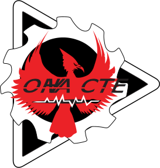
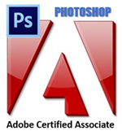

The certification I am most proud of is the completion seal I received from my OHVA Web Design class. This achievement represents the knowledge and skills I have gained throughout the course, and I take great pride in what I have accomplished so far. As a Web Designer, I am committed to continuing my growth and expanding my expertise, even in the face of challenges. I am grateful for the support I have received from those who have helped me along the way and am honored to accept this certification.
Completing my Adobe Illustrator credentials has strengthened my ability to create professional-level vector designs.
Ive gained proficiency with tools like the pen tool, shape creation, and color application, as well as refined my skills in typography, composition, and layering.
This certification has not only improved my technical abilities but also deepened my understanding of design principles and how to apply them effectively in digital projects.

Completing my Adobe Photoshop credentials has enhanced my ability to create and manipulate high-quality images.
Ive learned how to effectively use tools like layers, masks, and filters, as well as techniques for retouching, compositing, and color correction.
This certification has strengthened my technical skills and deepened my understanding of photo editing and digital design principles.
Completing my Adobe Dreamweaver credentials has improved my web design skills, particularly in creating and editing websites using HTML, CSS, and JavaScript.
Ive learned how to build responsive layouts, manage code efficiently, and use Dreamweavers features for seamless site development.
This certification has enhanced my ability to design and develop functional, user-friendly websites.